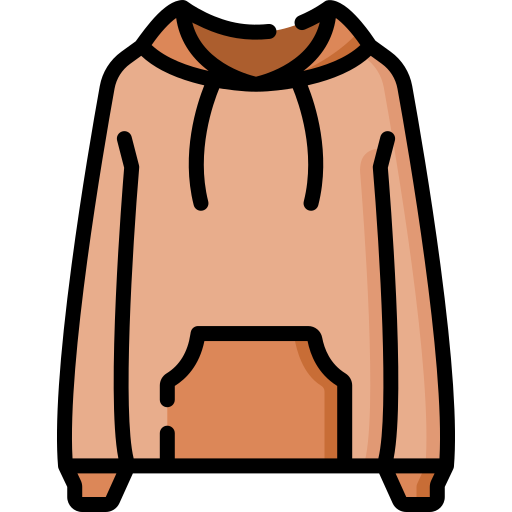
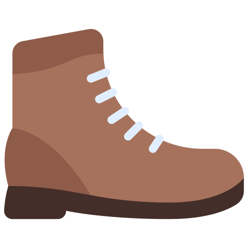

На сегодняшний день толстовка стала практически таким же распространненным предметом гардероба, как, например, джинсы или футболки — она есть почти у каждого. И это совсем не удивительно. Толстовки удобны в носке, неприхотливы в уходе, а производители предлагают сотни и тысячи различных моделей, среди которых каждый найдет себе вещь по вкусу. В этой статье мы поближе познакомимся с толстовками от ивановского производителя трикотажа «Натали».В последнее время выбор толстовок действительно становится просто гигантским — кажется, что только самые ленивые производители одежды не выпускают свои толстовки. «Натали» давно и уверенно работает на рынке одежды из трикотажа, в частности, у компании есть отличный ассортимент толстовок, свитшотов и худи для всех — мужчин, женщин, детей и подростков. Сегодня рассмотрим модели, предназначенные для девушек и женщин.
За полтора века своего существования джинсы перестали быть просто дешевой рабочей униформой; сегодня это не только удобная повседневная одежда для людей любого возраста и пола, но и предмет вдохновения для многих модных дизайнеров. Предыстория современных джинсов уходит своими корнями на несколько веков назад, в Европу. Считается, что слово «джинсы» (jean) пошло от названия города Генуя, где местные моряки с удовольствием носили прочные хлопчатобумажные брюки; позже штаны из этого материала стали в больших количествах производить в Англии. Слово «деним», обозначающее более прочную джинсовую ткань, пришло из Франции, где еще в шестнадцатом веке использовали ткань из города Ним, которая такденим, и называлась «serge de Nimes» (denim); в ее состав входили шелк и шерсть.
Без эффектной женской обуви не будет закончен ни один стильный образ. Это необходимая деталь и важное дополнение повседневного лука. Все уже привыкли, что каждый последующий сезон вносит некие коррективы в мир моды, и обновление стильных ботиночек не исключение. Ведущие дизайнеры добавляют новизну и изюминку моделям в своих коллекциях. Модные ботинки этого года достаточно интересные. Они видоизменились и предстанут в нестандартном обновленном виде. Итак, познакомимся с самыми ТОПовыми вариациями этой обуви.
